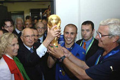

| ПРИВЕТ УЧАСТНИКАМ СОРЕВНОВАНИЙ! | |
|---|---|
Виды спорта: |
ФУТБОЛФутбо́л — командный вид спорта, в котором целью является забить мяч в ворота соперника ногами или другими частями тела (кроме рук) большее количество раз, чем команда соперника. В настоящее время самый популярный и массовый вид спорта в мире. Полное англоязычное название игры, «association football» («футбол по правилам Ассоциации»), было выбрано после создания английской Футбольной ассоциации в 1863 году, чтобы отличать эту игру от других разновидностей футбола, существовавших в то время, например регби-футбол («rugby football», «футбол по правилам Школы Рагби»), где была разрешена игра руками. Со временем длинные названия вариантов игры стали сокращаться в повседневной речи и печати. Сначала в Англии было распространено сокращение «assoc.», затем в 1880-х годах от него образовался термин «соккер» (англ. soccer) путём добавления к сокращению «-soc-» суффикса «-er» на оксфордский манер (по аналогии регби-футбол сокращённо назывался «раггер» (англ. rugger)). В периодике термин «соккер» используется по крайней мере с 1892 года. Согласно Оксфордскому словарю английского языка, самое раннее использование слова «soccer» в письменном языке зафиксировано в 1889 году в письме английского поэта Эрнеста Доусона (хотя он пишет его как socca, предположительно, потому что у него ещё не было стандартной письменной формы). |
| ГЛАВНОЕ НЕ ПОБЕДА, А УЧАСТИЕ! | |